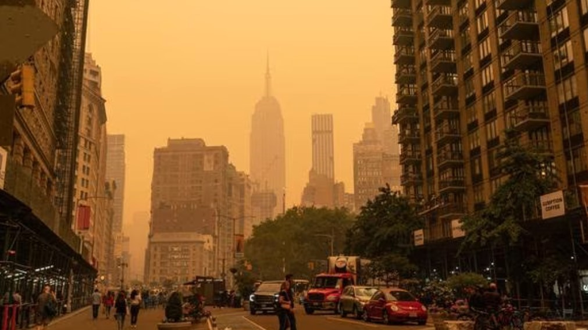

¡Atención! Frenemos un momento y miremos detenidamente: ¿qué está pasando en el mundo? Este año en Nueva York se registró uno de los casos más graves de contaminación atmosférica, en donde toda la ciudad quedó tapada por el humo. Este fenómeno se dio por los incendios forestales de Canadá, que provocaron 4 mil millones de hectáreas carbonizadas de bosques.
Más de 400 fuegos ardiendo fuera de control están causando estragos que superan a los Estados Unidos, y afectan a todo el ecosistema, decenas de miles de personas evacuadas, paraísos naturales perdidos y un aire peligroso para la salud que se extiende a miles de kilómetros a la redonda.
¿Seguimos pensando que lo que pasa del otro lado del mundo no tiene nada que ver con nosotrxs? Los incendios, la crisis climática, la sequía y el calor extremo en diversos puntos del planeta están amenazando a nuestros pulmones: los bosques. Este es un llamado de atención para abrir los ojos. Todxs nosotrxs somos el planeta, y nos estamos autodestruyendo.
Mientras tanto, también están surgiendo acciones conscientes: India renunció a instalar más carbón y está apostando por las energías renovables. China ya electrificó el transporte y sus industrias, y Estados Unidos y Europa van en camino a la transición energética para dejar atrás la economía de los combustibles fósiles.
Tenemos las herramientas para prosperar y transicionar a un nuevo paradigma con economía verde, energías renovables y agricultura regenerativa. La crisis ambiental puede convertirse en una oportunidad si transformamos nuestro sistema en uno que sea beneficioso para el medio ambiente, y por lo tanto para todxs.
AEl planeta es nuestro hogar, y somos parte de él. Es hora de actuar, dejar de preocuparnos para ocuparnos, tomar voz y lugar frente a la crisis climática. Desde el gobierno y las grandes empresas hasta las Pymes y cada unx de nosotrxs, el cambio necesita de todxs, y primero que nada depende del despertar interno, para que juntxs podamos generar algo diferente.